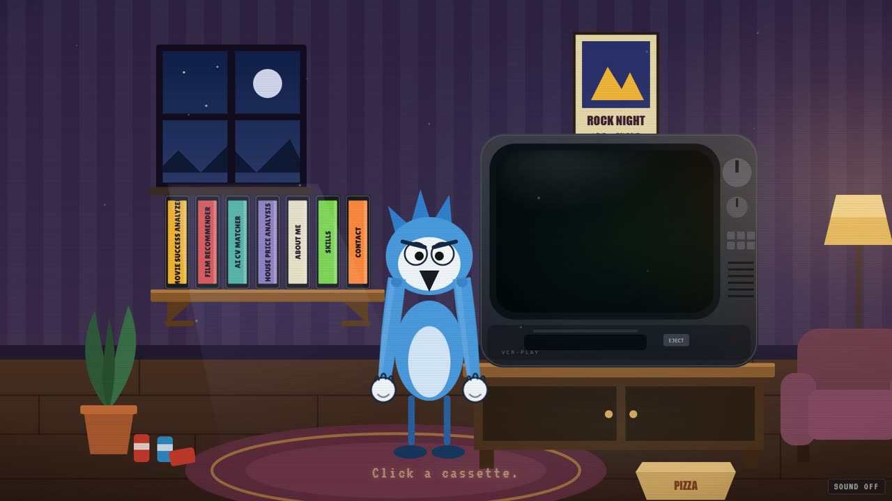
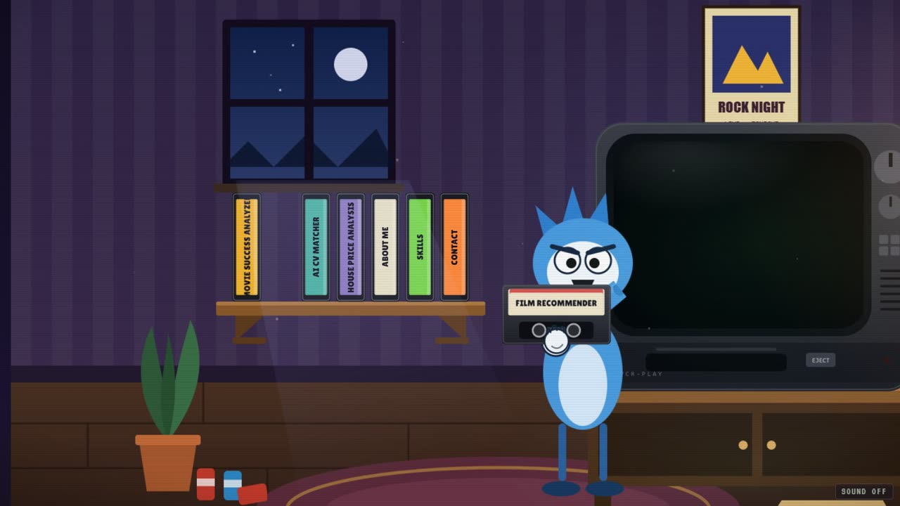

Short Prompts vs Long Prompts: My 38-Section AI Prompt Lost to Three Sentences
Short prompts vs long prompts: which one gets better results from AI? I accidentally ran the experiment on a real project. I built my portfolio twice with the same AI coding assistant, Claude: once from a huge, detailed specification and once from a few short sentences and a screenshot. The difference was not subtle, and it changed how I write prompts.
The project: a Regular Show living room as a portfolio
The idea was simple: instead of a grid of project cards, a cartoon living room from Regular Show. Every VHS tape on the shelf is one of my GitHub projects. You pick a tape, Mordecai puts it into an old CRT TV, and the project plays on the screen. Fun to imagine, hard to describe in words, which turned out to be the whole lesson.
Attempt 1: the long prompt (a 38-section spec)
I did what I thought a serious developer should do and wrote a very long prompt: 38 numbered sections covering the folder structure, the names of every animation function, the states of the state machine, eight milestones, an asset manifest, a parallax table and a list of forbidden things. Section one, in capital letters: NO 3D.
The AI followed it faithfully. Every requirement was ticked off: the architecture, the state machine, the docs, the deployment workflow. And this is what came out:


A flat 2D room, a full-body Mordecai standing in the middle, bobbing up and down as he walked to the shelf and carried the tape to the TV. Technically correct, well organised, every box ticked, and nothing about it made me want to click a tape.
Looking back, that wasn't the AI's fault. I had described the how in enormous detail and the feel almost not at all. And some of my rules were simply wrong: a few days later I was asking for exactly the thing I had banned in capital letters.
Attempt 2: the short prompt (three sentences and a screenshot)
Out of frustration I changed my style completely. My next messages looked like this:
Here's a screenshot of the living room from the show. Make it look like this: these colours, this TV, Mordecai's hand. Keep my repos on the tapes. I'll leave the rest to you.
The result jumped a level: a real 3D room with cartoon cel shading and ink outlines, the yellow staircase, Pops on the wall, and a jointed arm that actually grips the tape and pushes it into the VCR. Details I would never have thought to write into a spec.


Short prompts vs long prompts: what actually changed
Long prompt
Described the implementation. Locked in guesses I made before seeing anything. The AI's effort went into satisfying a checklist. Result: a flat 2D room.
Short prompt
Described the result and showed a reference. Left room for judgement. The effort went into making it look and feel right. Result: the 3D room I imagined.
Why shorter AI prompts often work better
- Long prompts freeze early guesses. I wrote my spec before I knew what I wanted. Every detailed rule was a decision made with the least information I would ever have.
- A checklist pulls attention away from quality. With 38 requirements, "done" means "every box ticked", not "this is great". Modern AI models are good at taste and craft; a huge spec leaves them little room to use it.
- References beat adjectives. "Dark, nostalgic, cinematic, cozy" means different things to different people. One screenshot meant exactly one thing.
- Small, concrete feedback converges fast. The best part was the back and forth: "the fingers need black lines like this" plus a quick sketch on a screenshot. Five of those got me further than the whole spec.
- Trust changes the output. "I'll leave it to you" sounds lazy, but it tells the model the goal is a good result, not obedience.
Short is not vague: what a good prompt still needs
This isn't "prompts don't matter". The short prompts worked because they still contained the few things that really mattered: the goal, a reference, and the one hard constraint (keep my five repos on the tapes). What I dropped was everything I didn't actually care about, or couldn't know yet.

How to write better AI prompts: my 5-step recipe
- One sentence of intent. What should someone feel or be able to do?
- A reference. A screenshot, a sketch, a link. Show, don't describe.
- Only the hard constraints. The handful of things that truly must not change.
- Hand over the rest. "You decide the details" is a feature, not a cop-out.
- Iterate with pictures. Short, specific feedback on what you see, not on what you imagined.
I'll still write long documents for things like APIs, where the details really are the requirements. But for anything creative, I now start small, show more, and let the model surprise me. It usually does.
FAQ
Are short prompts better than long prompts for AI?
For creative and design work, often yes. A short prompt with a clear goal, a reference and only the hard constraints leaves the model room to use its judgement, while a long spec locks in early guesses. For precise technical work, detailed requirements are still useful.
How long should an AI prompt be?
As long as it takes to state the goal, show a reference and list the constraints that truly cannot change, and no longer. Everything else is better handled through short rounds of feedback on what the AI actually produced.
How do I write better prompts for an AI coding assistant?
Describe the result instead of the implementation, attach screenshots or sketches, keep only hard constraints, let the assistant decide the details, and iterate with small, concrete feedback such as an annotated screenshot.
When is a long, detailed prompt still the right choice?
When the details are the requirements: API contracts, data formats, security rules, or an existing codebase's conventions. There, leaving things open causes bugs, not creativity.